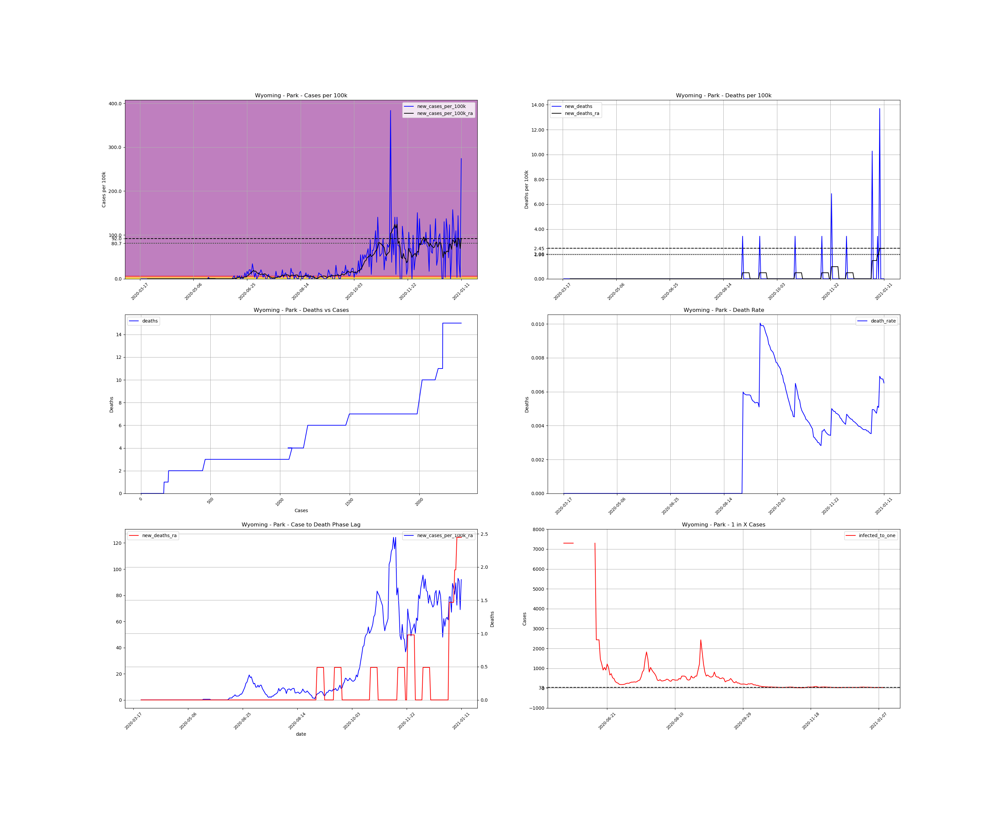

<h1>Wyoming Counties</h1><table><tr><td><a #Albany>Albany</a></td></tr><tr><td><a #Big Horn>Big Horn</a></td></tr><tr><td><a #Campbell>Campbell</a></td></tr><tr><td><a #Carbon>Carbon</a></td></tr><tr><td><a #Converse>Converse</a></td></tr><tr><td><a #Crook>Crook</a></td></tr><tr><td><a #Fremont>Fremont</a></td></tr><tr><td><a #Goshen>Goshen</a></td></tr><tr><td><a #Hot Springs>Hot Springs</a></td></tr><tr><td><a #Johnson>Johnson</a></td></tr><tr><td><a #Laramie>Laramie</a></td></tr><tr><td><a #Lincoln>Lincoln</a></td></tr><tr><td><a #Natrona>Natrona</a></td></tr><tr><td><a #Niobrara>Niobrara</a></td></tr><tr><td><a #Park>Park</a></td></tr><tr><td><a #Platte>Platte</a></td></tr><tr><td><a #Sheridan>Sheridan</a></td></tr><tr><td><a #Sublette>Sublette</a></td></tr><tr><td><a #Sweetwater>Sweetwater</a></td></tr><tr><td><a #Teton>Teton</a></td></tr><tr><td><a #Uinta>Uinta</a></td></tr><tr><td><a #Washakie>Washakie</a></td></tr><tr><td><a #Weston>Weston</a></td></tr></table>